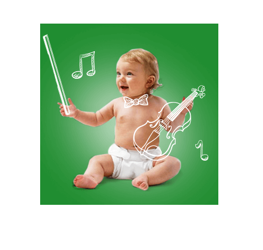

Ваш ребенок - гений!
Онлайн курс на 8 занятий для тех, кто хочет помочь своему ребенку вырасти здоровой, успешной и гармонично развитой личностью
Старт курса 18 12 2017
* Программа курса максимально эффективна для детей от 0 до 6 лет Программа курса является основой для всестороннего развития ребенка в 5 направлениях: физическом, интеллектуальном, эмоциональном, социальном и нравственно-духовном
Ваш ребенок - уникален. Он талантлив и мотивирован познавать этот мир, учиться и достигать высот. А Ваша задача, как родителя - помочь ему развиться с разных сторон, чтобы в будущем ребенку было проще найти любимое дело и стать счастливым в современном мире. В мире, который меняется с космической скоростью.
Алёна Антонюк, автор курса “Ваш ребенок - гений!”
Знаете ли Вы...
Что в первые 6 лет формируется интеллект, основные черты характера, привычки и, фактически, будущее ребенка?
Именно в этот период развивается почти весь мозг, и формируется интеллект человека. Более того, ученые еще в начале ХХ века установили, что существует прямая взаимосвязь между подвижностью и развитием интеллекта ребенка. Чем больше знает и умеет ребенок, чем более он самостоятелен - тем уверенней он чувствует себя в социуме и тем проще он коммуницирует с людьми. Так же проявляет лидерские качества и имеет активную жизненную позицию.
Это значит, что чем больше ребенок будет двигаться в раннем возрасте:
- Тем здоровее, спортивнее и умнее он станет
- Тем проще ему будет учиться и добиться успеха во взрослой жизни
- Тем более энергичным и мотивированным будет ребенок
- Тем проще ему будет коммуницировать в социуме
Родившись, ваш малыш уже мотивирован исследовать этот мир. Он энергичен и любознателен. И задача родителей - не отбить это стремление.
Важно не перегружать ребенка знаниями, а заниматься с ним в формате игры, весело и непринужденно.
Или пустить всё на самотек?
Само собой, я хочу помочь своему ребенку…
При чем тут Ваш курс, спросите вы?
Многие родители впадают в крайности:
Хочу чтобы мой ребенок был умным. Это - основа успеха в жизни!
Что делают: заставляют хорошо учится, устраивая нагоняи за каждую низкую оценку или несданный экзамен, упускают физическое развитие, и это портит здоровье
В результате: ребенок вырастает болезненным, с плохими навыками общения с людьми и неумением построить счастливые отношения
Хочу чтобы мой ребенок был сильным и здоровым!
Что делают: отдают на спортивные кружки, закрывая глаза на интеллектуальное и эмоциональное развитие
В результате: ребенок вырастает спортивным, но с очень узким кругозором и неспособным добиться успеха еще где-то, кроме спорта
- Программа курса “Ваш ребенок - гений!” создает основу для 5 основных направлений гармоничного развития:
- Физическое развитие (крепкое здоровье, много энергии)
- Интеллектуальное развитие (способность быстро обучаться, широкий кругозор)
- Эмоциональное развитие (стрессоустойчивость, умение адаптироваться к сложным жизненным ситуациям)
- Социальное развитие (способность заводить полезные связи и строить счастливые отношения)
- Нравственное и духовное развитие (сопереживание и желание помогать другим людям)
В основе курса - самые эффективные упражнения из методик гармоничного развития, по которым родители всего мира уже 62 года помогают своим детям вырасти здоровыми и счастливыми*.
Авторы используемых методик: Глен Доман, Доктор Франчес Пейдж, Масару Ибука, Маргарет Сасс.
Автор курса Елена Антонюк - эксперт гармоничного развития физического и умственного потенциала ребенка. Стажировалась и тренировалась вместе с сыном в школах раннего развития в Англии. 4 года изучала детскую психологию, методики раннего развития физического и интеллектуального развития детей и их гармоничного воспитания. Все методики, о которых рассказывает, лично использует для тренировок и обучения своих детей. Сертифицированный бизнес тренер IPS Systems.
Помочь своему ребенку стать счастливымНекоторые родители думают
Наши мамы и бабушки никаким гармоничным развитием с нами не занимались - и выросли же нормальными людьми
Да, но вы не учитываете… Мы с Вами живем на пороге больших изменений во всем мире, когда:
Новые технологии и гаджеты появляются быстрее, чем Вы успеваете за ними следить
Роботы становятся всё технологичнее и через 5-10 лет вытеснят миллионы людей низкоквалифицированных профессий
Требования ужесточились - нужно обрабатывать огромный объем информации и постоянно учиться
В этих условиях, успеха добиваются те, кто научился быть гибким и быстро обучаться.
Ваш ребенок вырастет хорошим даже, если с ним вообще не заниматься. Но если начать гармонично развивать его с раннего возраста - это сильно упростит ему всю дальнейшую жизнь, поможет раскрыть его таланты и обрести счастье в новом изменчивом мире.
Какое будущее выбираете Вы для своего ребенка?...
Обеспечить своему ребенкусчастливую и творческую жизнь
Курс состоит из 8 занятий:
- УРОК 1. ПОЧЕМУ ОТ ФИЗИЧЕСКОГО РАЗВИТИЯ В ПЕРВЫЕ 6 ЛЕТ ЗАВИСИТ ВСЕ БУДУЩЕЕ РЕБЕНКА?
- Умный, спортивный, общительный, легко ловящий знания на лету, радостный и легкий в общении, активный, инициативный, ответственный и самостоятельный, а главное счастливы и радостный ребенок. Возможно ли, чтобы все это совместилось в вашем ребенке?
- Важные фактами о развитии детского мозга, от мировых ученых
- Взаимосвязь между физическими тренировками и развитием интеллекта у ребенка, формирование нейронных связей
- 5 чувств человека - ключ к раскрытию потенциала ребенка
- Влияние физических тренировок на развитие чувств восприятия человека (слух, зрении, вкус, осязание , обоняние). И как это влияет на успеваемость в обучении (садик, школа, институт....) И на общий процесс реализации личности.
- Кинезиология развития. Как избежать проблем в будущем. Проще сначала все делать правильно, чем потом пытаться исправить ошибки неправильно проведенного детства
- 7 стадий развития детского мозга, которые помогут понять какие упражнения и в каком возрасте оптимальней всего выполнять с ребенком для максимального его развития
- Мозжечек и его функции в развитии
- Когда нужно начинать тренировки, чтобы ребенок наиболее быстро и просто обучался
- Проблема незнания=упущенные возможности
- Формирование мозга от 0-6 лет
- Сензитивный период или когда и что лучше развивать
- Навыки, необходимые для успеха
- Кто такие одаренные дети?
- Как и зачем ускорять развитие ребенка. Что от этого получит малыш?
- Развитие интеллекта
- Как физ.развитие влияет на на социальную адаптированность ребенка
- Как привить ребенку любовь к процессу обучения и познанию мира, чтобы в будущем учеба легко давалась и приносила ему радость
- Знакомство с учеными, врачами, и исследователями, которые десятилетиями изучали процессы развития человеческого мозга и интеллекта и их взаимосвязь с физическими тренировками
- Можно ли ускорить процесс развития ребенка, зачем это нужно, и какие это дает преимущества
- Приятные бонусы раннего развития и огромных возможностях, которые открываются перед ребенком
- Принцип “б.м.п.” - три основных направления физического развития, в которых нужно тренировать ребенка, для наилучшего развития его интеллекта
- “философия ровной и свободной поверхности” для грудничков
- Как развить у ребенка мотивацию обучаться, что является важнейшим навыком в современном, быстро меняющемся мире
- Роль мамы в процессе познания мира ребенком
- Важность личного примера родителей
- Правильная поддержка и мотивации детей родителями, формировании активной жизненной позиции у ребенка
- Как можно привлекать папу к тренировкам с малышом с самого рождения, для формирования крепких отношений между ними, развитию любви к ребенку, чувства причастности к воспитанию малыша, повышению отцовской ответственности в развитии личности
- Как заложить ребенку надежный фундамент для будущей успешной реализации в жизни
- 5 направлений всестороннего развития
- Основы всестороннего развития и гармоничного воспитания современной личности
- Составление личного графика дня ребенка, в котором найдем время для 10-ти минутных тренировок, открывающих большие возможности для ребенка
- Баланс ежедневной деятельности для гармоничного развития. Как все успеть?
- Мамины помощники, экономящие время
- Правильная расстановка приоритетов
- Навыки необходимые для успеха человеку будущего
- Айсберг простого обучения (что должно быть заложено в первые годы, чтобы ребенок легко учился в школе и т.д.)
- Проблемы современных детей и как их избежать
- Музыкальное развитие, развитие речи, изучение иностранных яхзыков
- Польза для здоровья
- Гиперактивный ребенок. Миф или реальность?
- Кинезиология развития
- «зачем это изучать, если можно сводить ребенка на занятия?» или ошибки, которые ограничивают возможности ребенка и не дают ему развиваться
- Как подготовить ребенка к успешному обучению в школе
Читать полностью - УРОК 2. ВАЖНЫЕ ЗНАНИЯ О РЕБЕНКЕ 0-2,5 МЕСЯЦЕВ. УПРАЖНЕНИЯ ДЛЯ РАЗВИТИЯ. УСПЕШНЫЙ СТАРТ
- Как усилить физический интелект вашего ребенка?
- В каких ситуациях кастет и развивается мозг?
- Осгновные упражнения программы для 1 стадии развития мозга. 0-2,5 мес. Медулла (костный мозг)
- 3 кита развития физического интеллекта - принцип б.м.п.
- Что такое пассивная и активная программы равновесия
- Развитие баланса, вестибулярного аппарата и других органов чувств (слух , зрении, вкус, осязание, обоняние) походка, легкость движения, координация тела, способности к разным видам спорта и физической деятельности
- Какие упражнения и виды спорта развивают баланс
- Основные правила успешных тренировок
- 15 основных упражнений на развитие вестибулярного аппарата из 3-х мерности пространства
- Развитие мануальных навыков. Как развивать моторику, внимание, воображение, мышление, все виды памяти, наблюдательность, речь с помощью тренировок рук
- Как мануальные навыки способствуют созреванию мозга, достижению следующей стадии развития, развитию речи
- Левое и правое полушарие мозга - за что отвечают.
- Что такое бимануальные навыки и что получает ребенок, если их развивать
- Упражнения и инструкции к тренировкам
- Ошибки родителей новорожденных
- Как замкнутое пространство (манежи, коляски и т.д.) тормозит развитие детей
- Философия пола или «время животика». Как приучить ребенка? Чем это полезно? Как это ускоряет формирование нейронных связей в мозгу ребенка
- Трек для ползанья
- Грудничковое плаванье. Его роль в развитии ребенка. Инструкции родителям для успешных тренировок, упражнения и первые шаги к тому, чтобы ваш ребенок любил плавать
- Как использовать рефлекс затаивания дыхания для обучения плаванью
- Развитие слуха, использование классической музыки для интеллектуального развития
- Танец- стимуляция мозга. Развитие такта.
- Развитие чувства пространства и ощущения тела
- Налаживание крепкой связи с мамой и выстраивание доверительных отношений (гордон ньюфелд)
- Укрепление шеи и спины
- Игры, развивающие вестибулярный аппарат
- Развитие зрения 0-2 месяца. Ближнее зрение (необходимое для чтения и письма)
- Стимуляция к движению
- Практическое закрепление материала, выбор любимых упражнений малыша.
- «10 минут в день» - переведение тренировок в ежедневную привычку
- 19 упражнений из Института Достижения Потенциала Человека
- 55 упражнений из австралийской школы раннего развития талантливых детей
Читать полностью -
УРОК 3. ВАЖНЫЕ ЗНАНИЯ О РЕБЕНКЕ 2,5-7 МЕСЯЦЕВ. УПРАЖНЕНИЯ ДЛЯ РАЗВИТИЯ
- 3 стадия развития мозга 2,5-7 мес
- Пассивная программа равновесия для новорожденных 0-7 мес. Подготовка к переходу к пассивной программе равновесия для детей от 7 месяцев
- Мануальные навыки - отработка хватательного рефлекса. Переход к осознанному разжиманию руки и следующему уровню развития мозга. Освобождение или выпускание - это жизненно важная функция
- 3 метода тренировок мануальных навыков
- Подвижность на 3 стадии развития. Правильная одежда.
- Основные принципы эффективного развития
- Как ползанье влияет на развитие зрения и речи. А в дальнейшем на способности к чтению и письму. Польза от ползанья. Его роль в дальнейшем развитии
- Нужно ли ползать ребенку или лучше сразу начать ходить
- Профилактика дислексии и дисграфии
- Как мотивировать ребенка к ползанью
- Виды необходимых поверхностей на разных этапах ползанья
- Тренировки в ванной – обучение ползанью
- Фитбол. Упражнения на развитие баланса. Укрепление мышц
- Как подготовить дом к ползунку
- Клетка vs свободное пространство
- Необходимый сенсорный опыт для этого возраста
- Зачем и как развивать органы чувств
- Массаж и гимнастика для сенсорного развития
- Развитие плечей, рук, кистей
- Комплекс упражнений на развитие баланса, подвижности и мануальных навыков
- Укрепление спины и пресса
- Огромные преимущества тренировок на лестнице
- Плавная подготовка мышц к хождению
- Как поощрять юного исследователя
- Препятствия, домашние баррикады, мебель для тренировок
- Развитие баланса через стимуляцию мышечного тонуса
- Время для купания. Развитие моторики, сенсорики
- Ошибки родителей и принцип, которого нужно придерживаться, чтобы не навредить
- Если ребенок не готов- не заставляйте
- 12 упражнений из Института Достижения Потенциала Человека
- 25 упражнений из австралийской школы раннего развития талантливых детей
Читать полностью - УРОК 4. ВАЖНЫЕ ЗНАНИЯ О РЕБЕНКЕ 7-12 МЕСЯЦЕВ. УПРАЖНЕНИЯ ДЛЯ РАЗВИТИЯ
- Что такое пассивная программа равновесия для ребенка от 4х
- Основные правила выполнения упражнений
- Меры безопасности
- Что дают тренировки на развитие баланса
- Основные упражнения пассивной программы равновесия
- Что дает ребенку развитие мануальных навыков
- Мануальные навыки: домашний турник
- Подготовка к тренировкам на рукоходе
- Усовершенствуем навыки ползанья для перехода на следующую стадию развития мозга
- Изменение поверхности для ползанья
- Правильная одежда для ползунка
- Увеличение дистанции ползанья для отработки навыков и сенсорной интеграции
- Упражнения 10-12 месяцев для развития ручек. Укрепление локтевых мышц
- Упражнения 10-12 месяцев для развития баланса. Укрепление мышц. Развитие крупной моторики
- Визуальное отслеживание и фокусировка на предмете
- Текстовая визуализация. Развитие зрения, фантазии, навыков чтения
- Ходьба - переход на следующий уровень развития мозга
- Как усовершенствовать навыки и улучшить координацию
- Музыкальное развитие, развитие чувства ритма. Развитие речи и способности легко обучаться
- Преодоление примитивных рефлексов
- Формирование нейронных связей и развитие зрения
- Визуальное отслеживание и фокусировка
- 12 упражнений из австралийской школы раннего развития талантливых детей
Читать полностью - УРОК 5. ВАЖНЫЕ ЗНАНИЯ О РЕБЕНКЕ 12-18 МЕСЯЦЕВ. УПРАЖНЕНИЯ ДЛЯ РАЗВИТИЯ
- Пассивная программа равновесия – подготовка к переходу на активную программу равновесия
- Наработка навыков хождения
- Упражнения с момента хождения и до 18 мес
- Период двухстороннего развития
- Детская коляска – тормозит развитие
- Массаж – сенсорная стимуляция для активации мозга
- Развитие баланса 12-18 мес
- Основы моторики 12-15 месяцев
- Игры с мебелью в домашних условиях
- Упражнения на лестницей и ориентация в пространстве
- Разные поверхности для развития навыков хождения
- Развивающие упражнения 15-18 мес
- Кувыркаемся правильно, Техника безопасности
- Фитбол. Упражнения на развитие баланса. Укрепление мышц
- Скутер борд. Развитие вестибулярного аппарата и всех органов чувтсв
- Вестибулярная стимуляция. Самые эффективные упражнения
- Музыка и песни. Играем на маракасах. Развитие ритма, и слуха
- Танцы, улучшающие математические способности
- Укрепление спины. Развитие мышц колена для хождения
- Развитие зрения. Подготовка ребенка к будущему чтению
- Умение визуализировать. Развитие зрения и воображения
- Развитие мануальных навыков для успешного письма
- Рукоход. Требования к одежде для успешных тренировок
- Упражнение с мячем, (координация, ощущения пространства себя в нем и ощущение времени)
- Как создать правильные условия для обучения ходьбе
- Усовершенствование навыков ходьбы
- Правильная одежда для ходьбы
- 30 упражнения из австралийской школы раннего развития талантливых детей
Читать полностью -
УРОК 6. ВАЖНЫЕ ЗНАНИЯ О РЕБЕНКЕ 18-36 МЕСЯЦЕВ. УПРАЖНЕНИЯ ДЛЯ РАЗВИТИЯ
- Что такое активная программа равновесия и что она дает ребнку
- Переход на активную программу равновесия
- От обычной ходьбы к гимнастике. Зачем это нужно?
- С чего начать, если вы начинали тренировки не с рождения
- 3 основных упражнения, входящие в активную программу равновесия
- Перекаты – что развивают. Техника выполнения. Правило ч.и.п. (частота, интенсивность, продолжительность)
- Кувырки. Хождение по балке. Развитие баланса, координации, ощущения тела в пространстве
- Программа развития вестибулярного аппарата для детей 18-36 мес
- Мануальные навыки. Развитие внимания, воображения, мышления, всех видов памяти, наблюдательности, речи
- Развиваем бимануальные навыки .как, чем и зачем
- Перехват на лестнице. Готовим руки к письму.
- Взаимосвязь тренировки рук и речи, письма, способностей к языам
- Правильные поверхности для хождения
- Что такое доверие своему малышу
- Правильная одежда для тренировок
- Подъем и спуск по лестнице. Развитие навыков подвижности. Формирование нейронных связей в мозгу
- Первая поверхность для тренировок. Какая она?
- Прогулка по 3-м видам местности. С чего начинать
- Упражнения на ощущение тела в пространстве
- Гармония физического и интеллектуального развития
- Развитие пальцев. Сенсорное развитие для будущего письма
- Тренировки на батуте. Универсальный метод развития всех мышц организма
- Перекрестное движение (развитие моторики), отработка базовых рефлексов
- Развитие зрения и зрительной памяти.
- Развитие баланса с помощью самокатов, велобегов, роликой. Скутербордов и т.д.
- Игры с лентами, обручами, мячами на развитие координации, баланса, ощущения своего тела
- Развитие ритма, легкости движений
- Виды танцев для преодоления базовых рефлексов, отработки навыков, развития ощущение тела в пространстве
- Балансиры, офисные стулья, кресла качалки и другие методы домашнего развития вестибулярного аппарата
- Домашние «баррикады» и эстафеты
- Игры «о животных». Веселые методики развития важнейших навыков баланса
- Прыжки, горки и спорткомплексы - помощь развитому и умному ребенку
- 10 упражнений из Института Достижения Потенциала Человека
- 84 упражнения из австралийской школы раннего развития талантливых детей
Читать полностью - УРОК 7. ВАЖНЫЕ ЗНАНИЯ О РЕБЕНКЕ 36-72 МЕСЯЦЕВ. УПРАЖНЕНИЯ ДЛЯ РАЗВИТИЯ
- 30 Упражнений основной программы, составляющих активную программу равновесия
- Совершенствование в любых видах спорта после окончания формирования вестибулярного аппарата
- Введение в гимнастику для детей. Переход на финальный этап развития
- Как еще можно развивать баланс
- Мануальные навыки: передвижение по рукоходу. Когда, зачем, что дает в развитии
- Как научить ребенка самостоятельному передвижению по рукоходу
- Варианты тренировок на рукоходе
- Левое и правое полушарие мозга. Их взаимодействие
- Выработка новых нейронных связей за счет бимануальных навыков
- Упражнения, помогающие развить бимануальные навыки. Развитие левого и правого полушария мозга
- Развитие подвижности: бег
- Преимущества бега: Работа дыхательных органов, рост мозга, обогащение кислородом, всестороннее развитие
- Идеальная поверхность для бега
- Как полюбить бег
- Правильная одежда для бега
- От бега трусцой на несколько метров к дистанции в несколько километров
- График наращивания тренировок
- Спринт и кросс. Зачем они нужны и как тренировать
- Синхронный танец, замедленные движения, логоритмика
- Периферийное зрение. Зачем нужно и как развивается. Упражнения
- Стимуляция зрения – влияет на возможность читать и писать, легко обучаться
- Возраст социального взаимодействия, командные игры
- Игры с универсальными сенсорными мешочками24. Визуальное отслеживание. Умение сфокусироваться на движущемся предмете.
- Развитие ближнего зрения (важно для чтения)
- Ролевые игры и творчество. Раскрываем потенциал ребенка
- Интеллектуальное наполнение Умный малыш – легко
- Игры со скакалкой и ленточками (координация, ощущение времени, и тела в пространстве)
- Ползанье для взрослых детей. Зачем нужно и как влияет на чтение
- Игры «о животных». Веселые методики развития важнейших навыков баланса
- Трапеции, кольца. Развитие рук для письма
- Музыкальное развитие. Звуковая терапия и «питание для мозга». (стимуляция внутреннего уха, оптимальное развитие ума, концентрация / расслабление )
- Авторы развивающей музыки для детей
- Домашние музыканты – развиваем слух дома
- Ребенок визуализирует только то, что видел. Развитие навыка визуализации
- Закрепление всех необходимы навыков, важных для успешного обучения в школе
- Преодоление базовых первичных рефлексов – кинезиология развития
- Как эти тренировки меняют жизнь человека
- Исправлять ошибки сложнее, чем делать все правильно с чистого листа
- 7 упражнений на развитие бимануальных навыков из Института Достижения Потенциала Человека
- 32 упражнения из Института Достижения Потенциала Человека
- 72 упражнения из австралийской школы раннего развития талантливых детей
Читать полностью - УРОК 8. ВАЖНЫЕ ЗНАНИЯ О РЕБЕНКЕ 72 + МЕСЯЦЕВ. УПРАЖНЕНИЯ ДЛЯ РАЗВИТИЯ. Дополнительные рекомендации
- Программа равновесия 72+
- Виды активности для дальнейшей разработки баланса и усовершенствования в навыках
- Что дает заложенная база
- Дальнейшие тренировки мануальных навыков
- Письмо: критерии успеха
- Подвижность: бег, прыжки, ходьба на длинные расстояния, ходьба в горах, подъем/спуск на лестнице
- Как помочь ребенку определиться с опорной ногой
- Тренировки с родителями. Родители
- Плаванье. 5 рекомендаций от глена домана из книги «как научить вашего ребенка плавать»
- Как привить ребенку любовь к плаванью
- Не тестируйте своих детей
- Цель раннего развития – привить любовь к познанию
- Чем папе занятся с ребенком. Налаживание крепких отношений папа-ребенок
- Это нужно слышать каждому ребенку
- Развитие креативности и нестандартного мышления. Несколько вариантов применения одного предмета
- Качественное окружение для гармоничного развития
- Оборудование, которое можно использовать в домашних условиях для гармоничного развития ребенка
- Виды спорта, активности и других тренировок для детей от 0-6. 27 рекомендаций
- Грамотная организация пространства для эффективного развития каждый день. 44 рекомендации
- 5 направлений всестороннего развития. И баланс их использования
- Изменения в осознании важности раннего физического развития22. Современного воспитания гармоничной личности
- Подарок участникам - живые встречи с тренировками в киеве
- Введение упражнений в практику, формирование привычки и обучение детей полезным занятиям и играм
Читать полностью
Занимаясь по методике курса, Вы закладываете крепкий фундамент, чтобы Ваш ребенок:
Стал физически
сильным и здоровым
Владел хорошо
поставленной речью
Легко запоминал
новую информацию
Быстро и с удовольствием
учил иностранные языки
Хорошо писал и читал
Легко знакомился,
общался с людьми
Был уверен в себе, обладал
лидерскими качествами
Имел широкий кругозор
Легко и с удовольствием
зарабатывал деньги
Варианты прохождения курса:
STANDART
- On-line просмотр курса (8 уроков по 2 часа)
- 2 Еженедельные обучающие онлайн-встречи
- 1 Еженедельная встреча для ответов на вопросы, отчет по результатам и обратная связь по домашним заданиям
- Видео-записи всей программы
- Конспект с упражнениями для каждой возрастной группы
- Общение мам – единомышленниц в Facebook группе
999 грн.
1600 грн.
Выбрать вариант StandartPREMIUM
Программа курса STANDART и :
- Поддержка на протяжении всего проекта (персональные ответы на вопросы в ФБ)
- 1 разовый визит тренировки для детей в Киеве
- Вебинар от детского диетолога Марии Федоренко о здоровом питании для детей
- Дополнительная полезная литература
- Занятие в «Перша Школа Плавання»
- Цикл мини видео (4 шт.) «Успешная адаптация в детский сад» от Монтесори мамы Алены Поповой
- Скидка 5% на детское спортивное оборудование для дома
VIP
Программа курса STANDART и :
- Поддержка на протяжении всего проекта (персональные ответы на вопросы в ФБ)
- Доп. поддержка и возможность задать вопросы еще 1 месяц после окончания курса
- 2 встречи - тренировки для детей в Киеве
- 2 персональные консультации по вопросам практического применения курса или подбора развивающего оборудования (скайп, телефон или facebook)
- Персональная консультация и составление плана «Тайм менеджмент гармоничного развития ребенка. Как правильно спланировать время тренировок и занятий»
- Вебинар от детского диетолога Марии Федоренко о здоровом питании для детей
- Консультация детского диетолога по поводу правильного питания для здорового организма
- Дополнительная полезная литература
- 3 занятия в «Перша Школа Плавання»
- Цикл мини видео (4 шт.) «Успешная адаптация в детский сад» от Монтесори мамы Алены Поповой
- Скидка 10% на детское спортивное оборудование для дома
Меня зовут Алена Антонюк, я создатель курса “Ваш ребенок - гений!”.
Если Вам не подойдет курс в течение первых 2-х занятий - я сразу и без вопросов верну Вам все деньги.
Но только во время первых 2-х занятий. Если Вы пойдете дальше - это автоматически означает, что курс Вас устраивает.